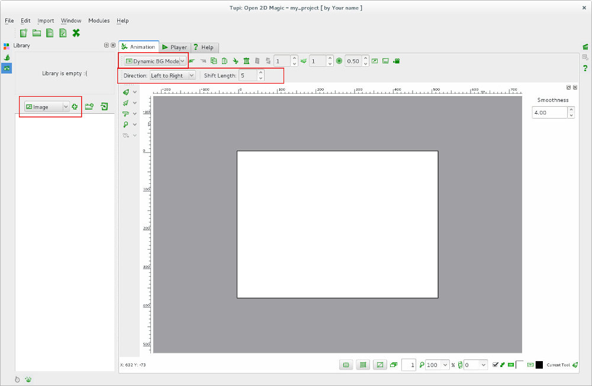
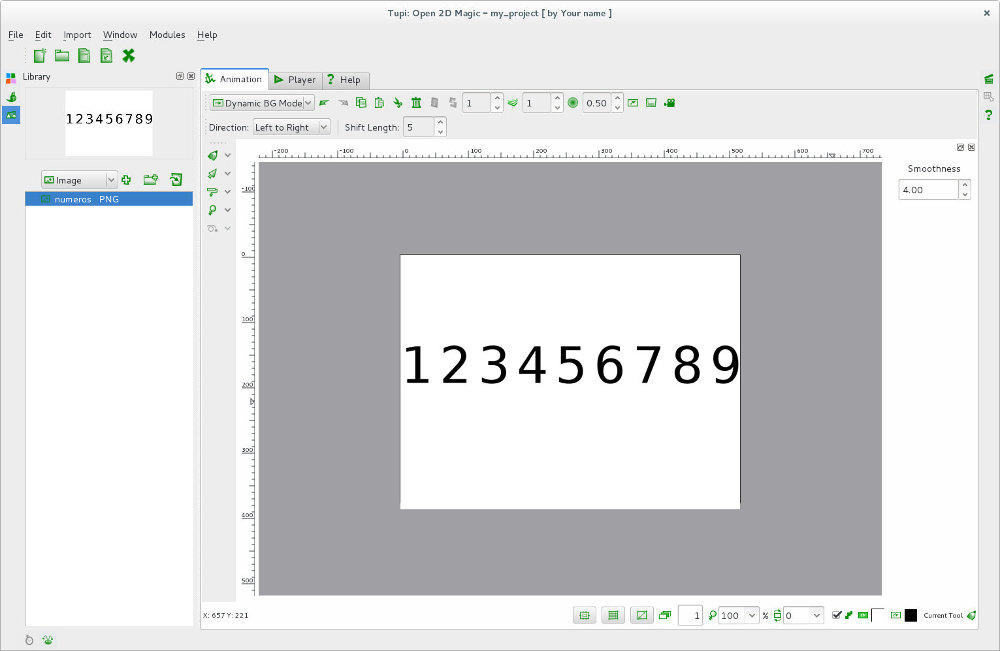
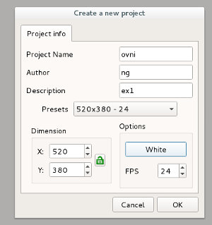
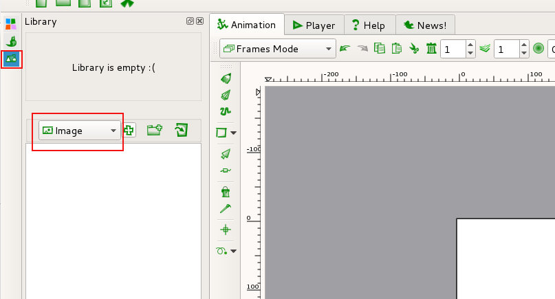
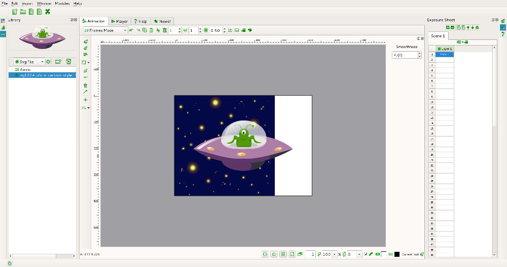
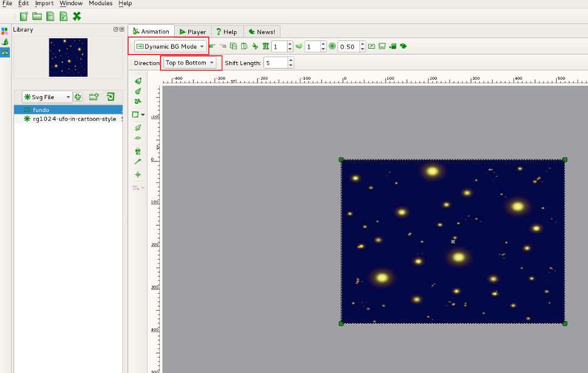

Dynamic Background no Tupi
Introdução
Dynamic Background é uma funcionalidade do Tupi que permite criar muito facilmente uma animação de fundo. Em baixo, no vídeo, tem um exemplo simples da funcionalidade.
Patito: Dynamic Background Test #5
Utilizar o Dynamic Background
1. Depois de iniciar o Tupi e criar/abrir um projeto, altere para modo Dynamic BG. Irá surgir um novo menu que permite definir a direção do movimento (da esq. para dir.; da dir. para esq.; de cima para baixo ou de baixo para cima) e a velocidade (número de pixels da deslocação por cada frame; na imagem abaixo, o Tupi está configurado para que o fundo se desloque da esquerda e vai deslocar-se 5 pixels em cada frame).
2. Adicione a imagem que pretende utilizar no fundo. No nosso caso, para este exercício, foi criada e importada uma imagem com números (de 1 a 9). Na altura da importação, a imagem foi automaticamente redimensionada pelo Tupi para a resolução do palco.
3. Volte ao Frames Mode e crie as frames que pretende. No exemplo, clicámos na frame 50 e foram criadas automaticamente 50 frames com fundo animado.

Exercício
Neste exercício vamos utilizar a imagem raster fundo e a imagem vetorial ovni (disponível em OpenClipart).
{kind=link}
{kind=link}
1. Comece por criar uma pasta para o seu projeto e por criar um projeto tupi.
2. Utilize a Library para importar a imagem raster (Image) e a imagem vetorial (SVG file).
3. Caso as imagens sejam automaticamente importadas para o palco, apague-as.
4. Ative o Dynamic BG mode e importe a imagem de fundo para o palco. Como a dimensão da imagem não corresponde à dimensão do palco, utilize os pontos para redimensionar a imagem a seu gosto. Escolha Top to Bottom na Direction. Iremos utilizar a velocidade pré-definida (Shift Length = 5).
5. Ative o Frames mode e importe a imagem vetorial (ovni) para o palco na primeira frame. Agora é uma questão de duplicar. No nosso exemplo, estamos a utilizar 24 FPS e vamos criar 3 segundos (72 frames).
Sugestão: Utilize o BDR na primeira frame e escolha a opção Copy TL Forward > 5 Times. Esta opção irá duplicar as frames existentes (ainda só existe a frame 1) 5 vezes, vai ficar com 6 frames. Se repetir o processo, não se esqueça que a sua TimeLine já tem 6 frames!
6. No final, faça Export Project (File) para criar um vídeo.
(Link para ficheiro aqui)